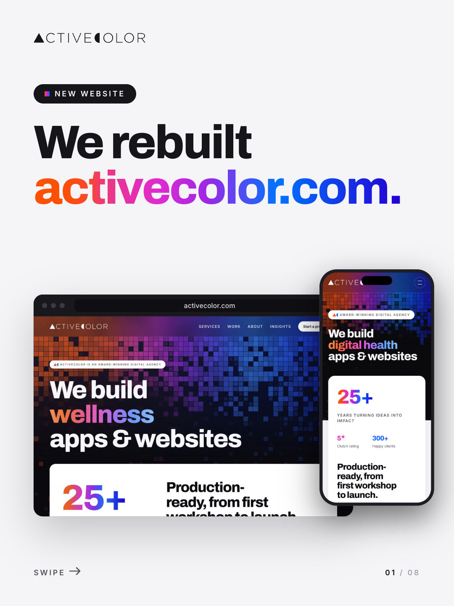
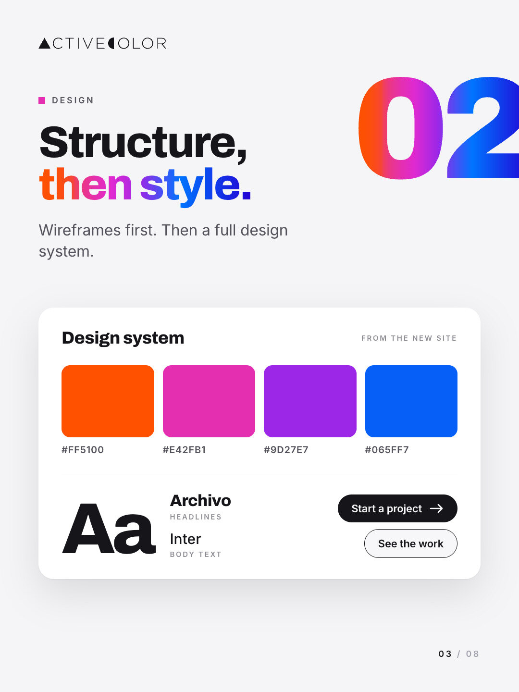
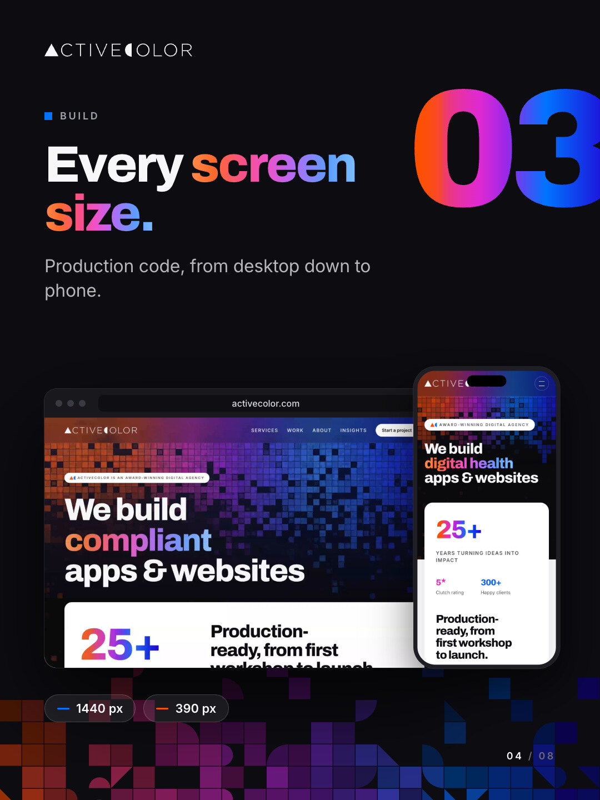
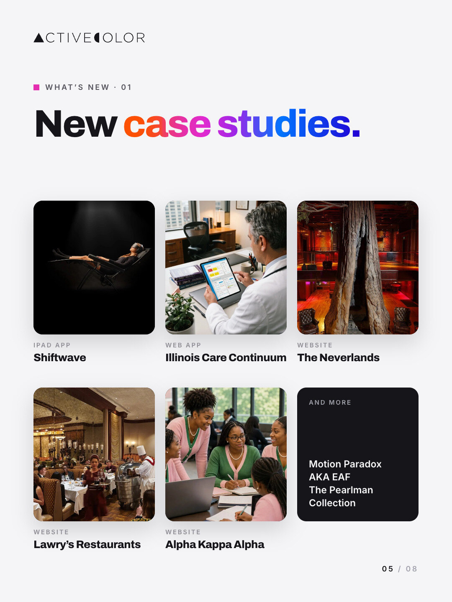
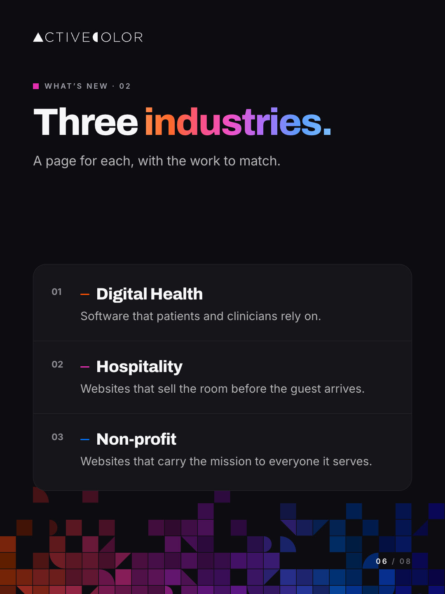

We rebuilt activecolor.com








Captions
We rebuilt activecolor.com from the ground up. 🎉 Here’s how we did it, and what’s new inside: 1. Discover. We listened first: workshops, interviews and an audit of every old page. 2. Design. Structure first, then style. The wireframes became a full design system. 3. Build. Production code for every screen size, from desktop down to phone. What’s new on the site: → New case studies, including Shiftwave, Illinois Care Continuum, The Neverlands, Lawry’s Restaurants and Alpha Kappa Alpha → A page for each of our three industries: Digital Health, Hospitality and Non-profit → Our full-cycle services, from first workshop to ongoing support Take a look around: https://activecolor.com #WebDesign #UXDesign #DigitalAgency #Website